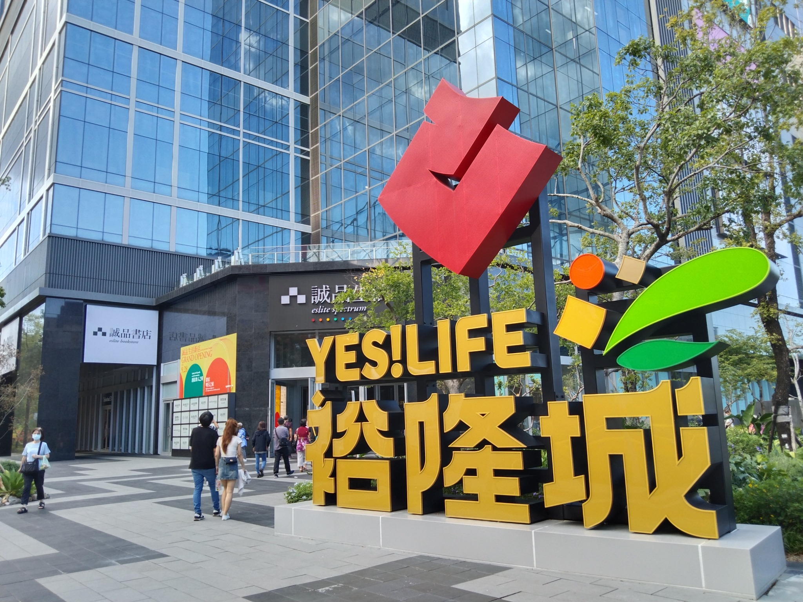
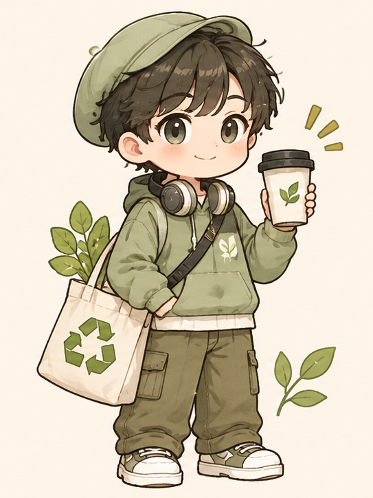
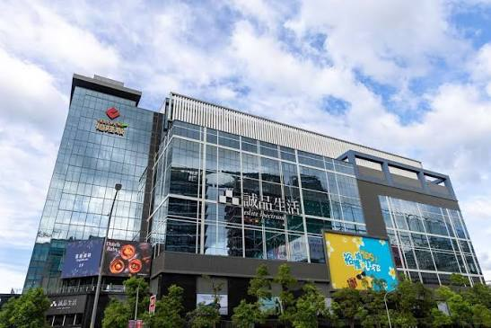
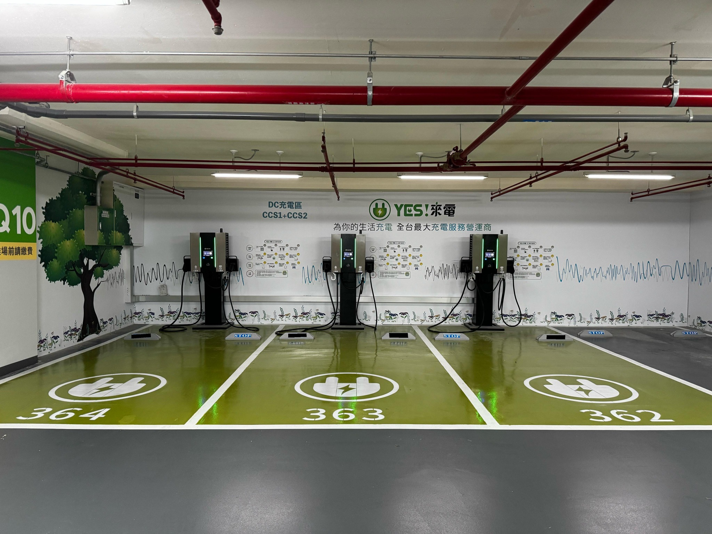
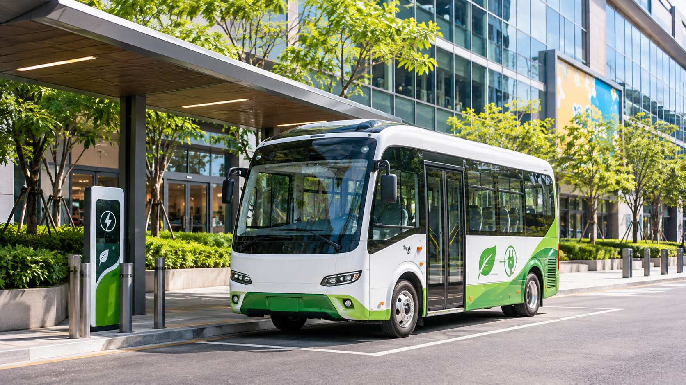
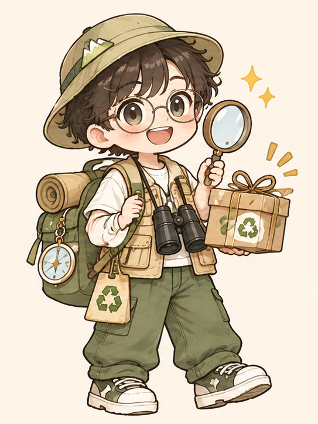

🍽
餐飲折抵券
指定合作餐飲折抵 10 元
1,500 點

你的裕隆城 AI 綠活小助手已上線！從市集尋寶、個人化穿搭、充電與接駁到日常綠活，幫你找到今天最適合的體驗。
我是你的綠活小助手。告訴我今天的心情和時間，我就幫你安排適合的永續體驗！

✦ 在線陪你探索選好興趣和時間，就能收到有圖片的活動推薦卡。
查看點數、解鎖徽章、兌換獎勵，記錄自己的永續生活。
點一下印章就能前往不同體驗；完成示範任務後，這裡會亮起你的專屬印記。
完成不同類型任務，解鎖自己的永續成就。
試辦換算：150 點約等於 1 元折抵價值
指定合作餐飲折抵 10 元
指定市集攤位折抵 20 元
指定合作品牌折抵 50 元
本網站為課程提案互動示範，非裕隆城官方會員服務。綠點、搭乘、核銷及驗證皆為模擬；實際服務須經合作及系統串接。個人紀錄僅儲存在本機瀏覽器，未上傳伺服器。
不必一次改變所有習慣。選擇你感興趣的體驗，參加任務、累積綠點，讓裕隆城成為每次都值得探索的永續生活場域。

01 / 循環探索永續奇遇市集人格測驗・專屬尋寶・穿搭配對 ↗
02 / 智慧能源電動車充電尖離峰綠點試算 ↗
03 / 綠色移動電動接駁車捷運轉乘・搭乘集點 ↗把循環生活變成一場有驚喜的探索。
帶來狀況良好的閒置物品，經現場確認後交換一份未知的驚喜。
選購二手衣、完成穿搭伸展台拍照，製作你的專屬風格小卡。
利用回收材料參與手作體驗，讓資源循環變成親手完成的作品。
像人格測驗一樣找到你的角色，解鎖專屬市集任務。

生活尋寶家透過物品交換實踐永續先做永續人格測驗，再解鎖適合你的市集尋寶任務。
完成永續人格測驗後，這裡會出現專屬任務與推薦理由。
每一種人格都有不同、可在市集現場驗證的體驗。
只要選擇你喜歡的風格和穿搭場合，就能取得搭配建議，並探索市集裡適合尋找的二手單品。
目前依照風格與場合提供示範推薦；正式平台可串接市集二手衣商品資料。
按下按鈕，就會顯示完整搭配建議及對應圖片。
用你提供的裕隆城充電站實景，體驗尖峰與離峰的回饋差異。
選擇條件並按下計算按鈕。
慢充每滿 30 分鐘：尖峰 75 點／離峰 150 點；快充每度：尖峰 20 點／離峰 50 點。試算不會直接入帳，也不提供車位預約。
提案規劃大坪林捷運站與裕隆城間的電動接駁服務。
完成搭乘驗證後，每趟可獲得 15 綠點，每日最多 2 趟，共 30 點。
日常生活也能輕鬆累積永續成就。
合作店家驗證自備杯消費，示範回饋每次 600 綠點。
每滿 0.5 公斤回饋 150 點，每月上限 5 公斤。
完成借還驗證，累積綠活行動紀錄；點數待合作確認。
你完成的任務、集章與綠點都會在這裡留下紀錄。點一下，就能帶走專屬成果圖片。
完成任務後，這裡會記錄你的綠色足跡。
還沒有行動紀錄，從上面的任務開始吧！
成果卡依照本機瀏覽器的示範紀錄產生，不代表真實會員集點或官方減碳認證。